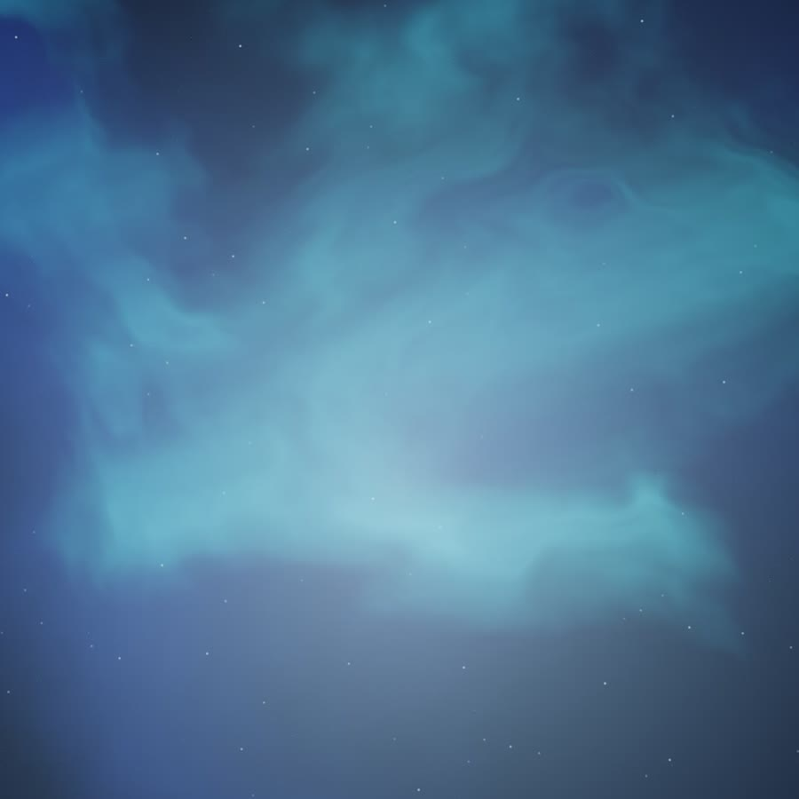
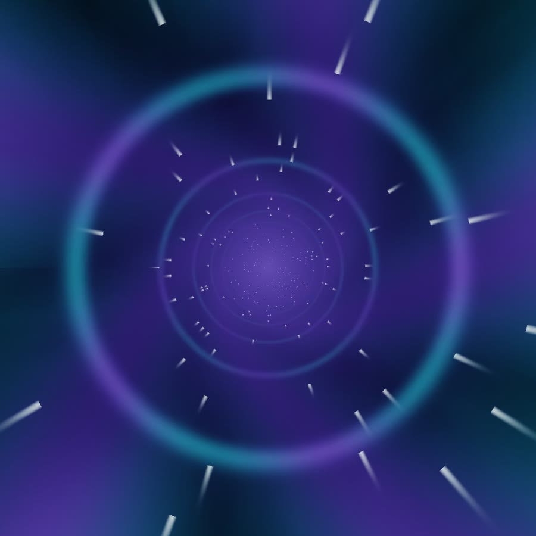
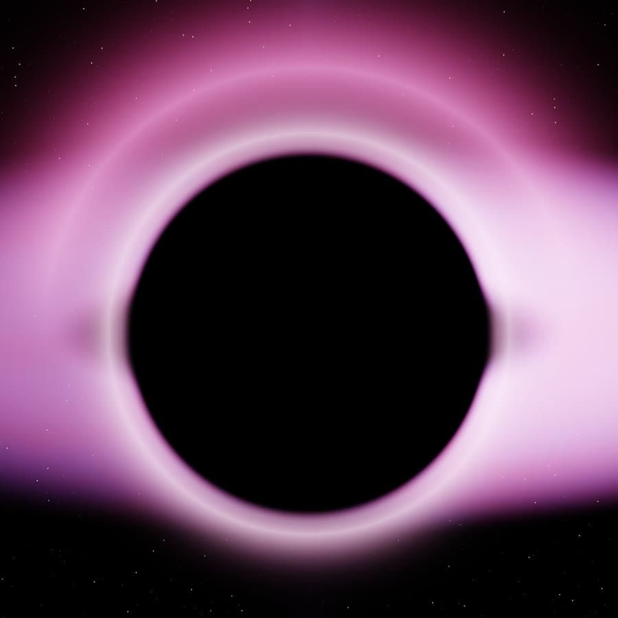
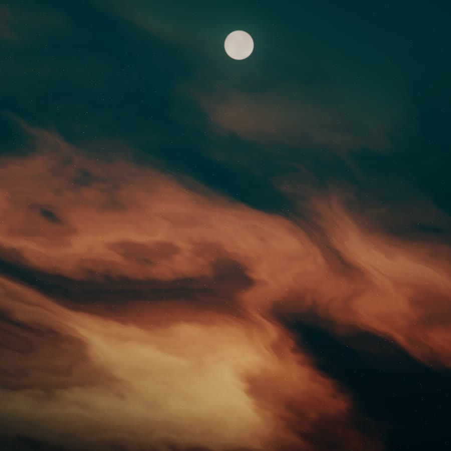
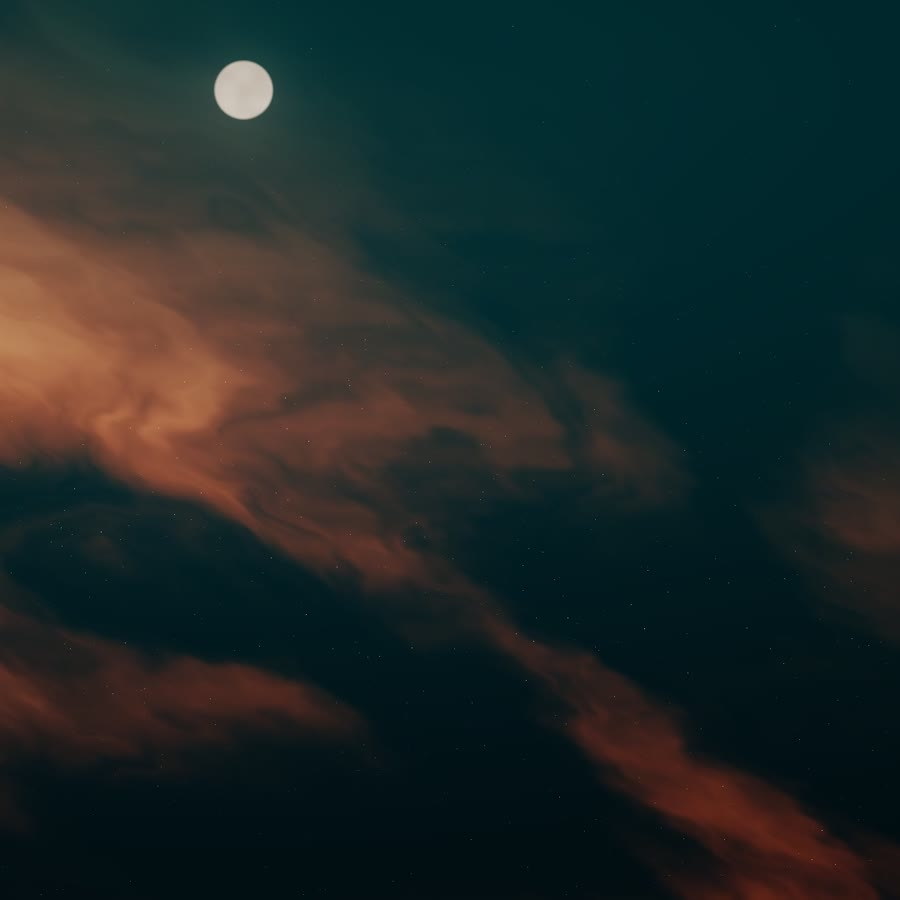

Próximamente

Sencillo 01Melodic techno
Sello de música electrónica: melodic techno, house melódico y narrativos. Cada lanzamiento con su propio visual. Música creada con IA y dirección humana. 🪐
Cada lanzamiento llega con su propio visual, creado para moverse al ritmo de la música.





Bajos profundos, sintetizadores melancólicos y drops que crecen poco a poco. Para manejar de noche o perderse en la música.
Textos originales que se dicen, no se cantan, sobre house melódico. Historias para escuchar con audífonos.
Nebulosas, túneles y eclipses que reaccionan a cada golpe del bombo. Cada canción mueve su propio universo.
Música electrónica creada con inteligencia artificial y dirigida por personas: cada sonido, cada palabra y cada visual se eligen a mano.
coreXmusic es un sello de Corexware. Siempre lo decimos con claridad: nuestra música y nuestros visuales se crean con herramientas de IA.